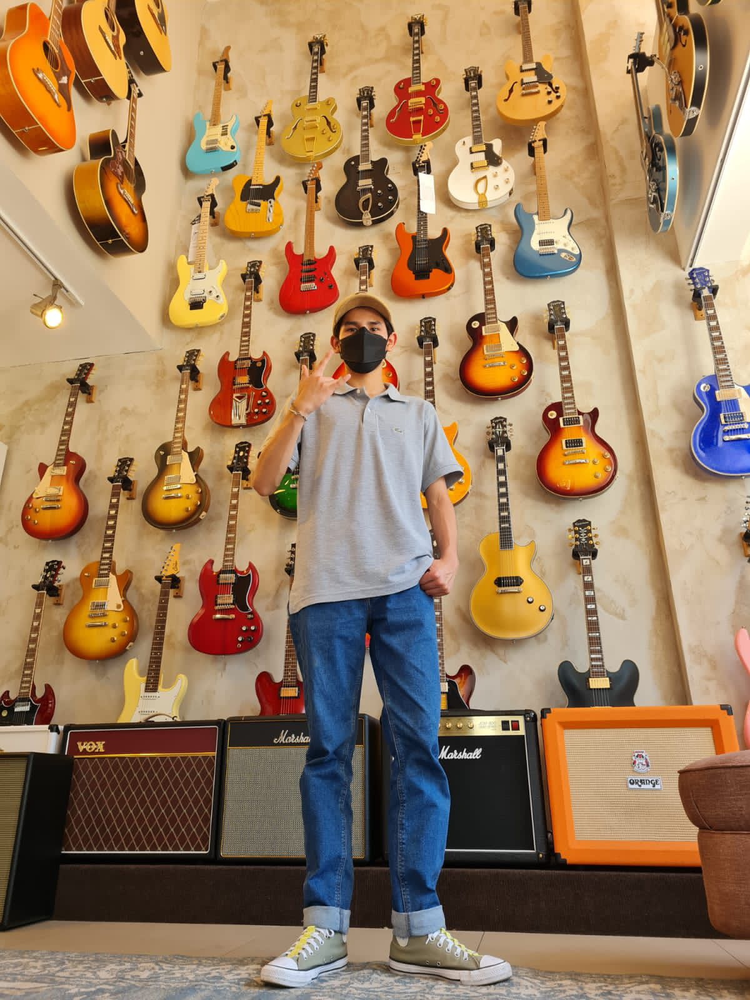
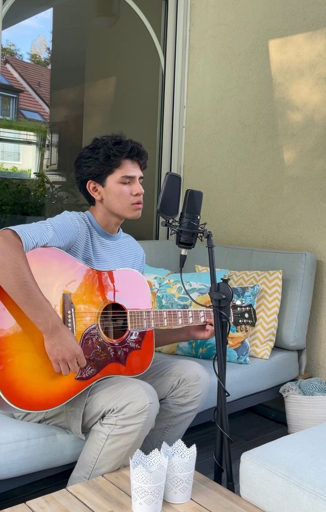

Soy un estudiante de Ingeniería Informática de 20 años en la Universidad Francisco de Vitoria, y este sitio web representa la culminación práctica de la asignatura de Desarrollo Web impartida por el profesor Juan Pueyo. Este proyecto nace con el objetivo de demostrar competencias técnicas sólidas en la creación de interfaces digitales, sirviendo como un punto de encuentro entre mi formación académica lógica y mis intereses personales. He enfocado el desarrollo no solo como una entrega curricular obligatoria, sino como una oportunidad real para implementar estándares de codificación limpios y funcionales que reflejen mi crecimiento como futuro ingeniero.
La arquitectura temática del sitio se fundamenta en mi profunda afinidad por el "Soft Rock", un género que estructura mi criterio musical con influencias marcadas de Queen, Soda Stereo y The Police. Mi vinculación con este mundo comenzó activamente a los 16 años, una etapa en la que generaba contenido audiovisual frecuentemente, lo que me ha permitido curar la información de esta página con conocimiento de causa. He seleccionado estas tres bandas favoritas como pilares del diseño, buscando que la estética visual del proyecto esté a la altura de la calidad sonora que estos grupos legendarios representan en la historia.
Más allá del código y los algoritmos, mi perfil se define por una versatilidad que equilibra la exigencia mental de la carrera con la disciplina física del baloncesto y el fútbol. Estas pasiones deportivas, sumadas a mi trasfondo musical, moldean una personalidad dinámica que busca constantemente la superación y el trabajo en equipo, valores que intento trasladar a mi entorno académico en la UFV. Considero que esta faceta activa es crucial para mantener la claridad mental necesaria al enfrentar problemas de programación, aportando una perspectiva fresca y enérgica a cada tarea que emprendo.
El proceso de desarrollo de esta web supuso un desafío técnico considerable, obligándome a investigar más allá del temario básico para implementar soluciones eficientes y modernas. Aunque encontré dificultades en la maquetación y la lógica, supe gestionar la curva de aprendizaje mediante la autoformación y la perseverancia, logrando resolver cada obstáculo de manera satisfactoria. El resultado final es producto de horas de depuración y diseño, demostrando mi capacidad para transformar requisitos complejos en un producto digital terminado, informativo y, sobre todo, funcional para el usuario.
 @mauuu_p__
@mauuu_p__
 @mauriciopaolo
@mauriciopaolo
 @mauricio__p
@mauricio__p